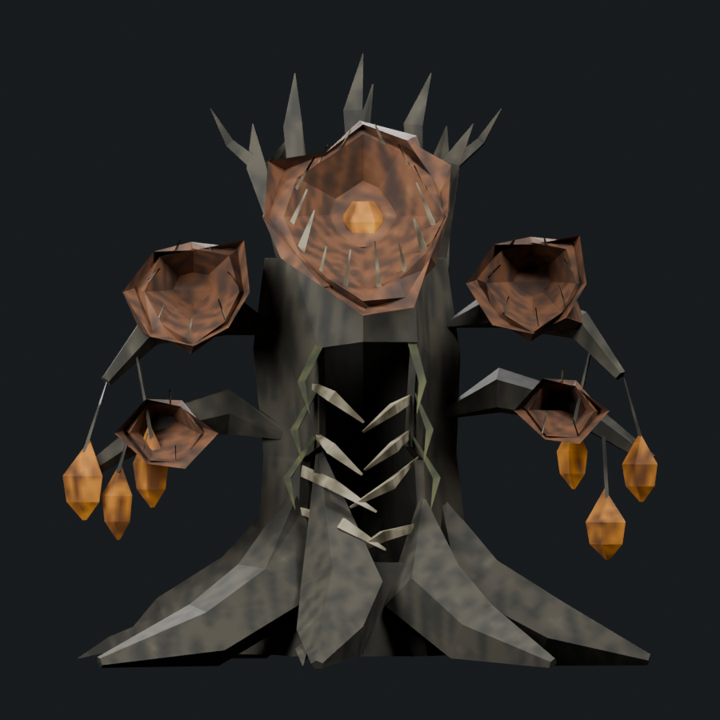
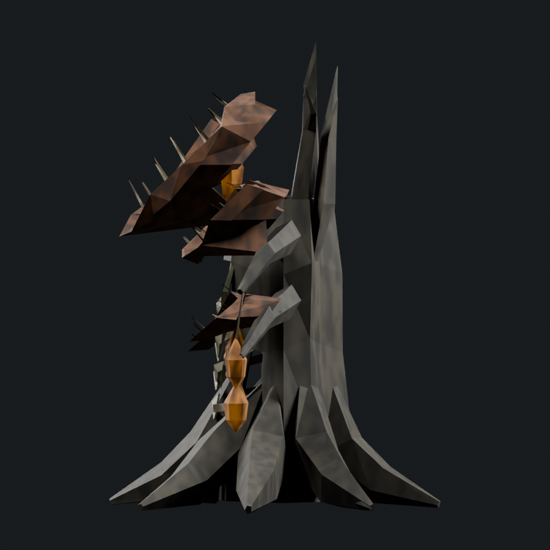

Intermediate editable study. Not installed, not accepted. The new study does not change the 1/6 adequate-boss tally.
Portable skinned model · Blender source · Review findings · Geometry/pose support proof · 48-entity ledger
2,126 triangles / measured native donor 1,422 / soft cap 2,133; one mesh/material, four packed 512px maps.
Original committed concept, unaltered. Previous model comparisons use the exact current cameras and lighting.


Fifth overlapping sepal ring with broken radial spacing and lip depth.
This builds the previously committed fifth sepal ring. It remains close to r3: regular cups, broad smooth timber and insufficient seed/bark anatomy. Preserved as an intermediate, superseded for review by r5.
Offline manifold topology, skin weights, atlas, export and sampled supports pass. These checks do not establish appearance, animation quality, runtime admission or live performance.